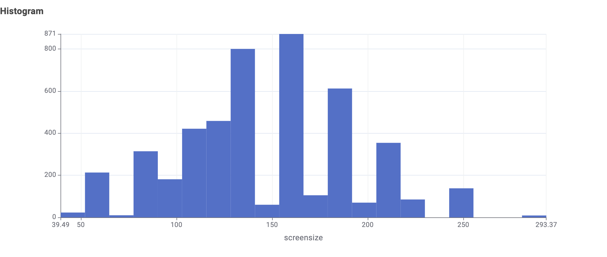

Who is this for?
Audience: Australian households who are about to buy a new TV and want to keep their electricity bill under control – not engineers, just everyday shoppers who see a “stars” label in the shop and wonder what it really means.
What they want to know: “If I buy a bigger or fancier TV, how much more power will it use per year – and which type should I pick?”
Storytelling
1 Setting Who is the reader, and what do they already know?
Reader: an Australian household shopping for a new TV.
They already know: bigger TVs cost more to buy, and energy labels have stars.
They don’t know: what “kWh per year” means for their bill, or whether screen technology (LCD, LCD (LED), OLED) changes it.
2 Conflict What problem or surprise is in the TV data?
Most people assume that a good star rating means a low bill. The data says otherwise:
- Stars compare a TV only with TVs of similar size, so a 5-star large TV still uses far more power than a 5-star small one.
- Even at the same size, models differ by hundreds of kWh per year.
- Surprise: among small TVs, OLED uses almost double the energy of LCD.
3 Evidence Which results show it?
4 Chart Which chart shows it best?
A grouped bar chart: size groups along the bottom, one bar per screen technology, height = average kWh/year. Grouping lets the reader compare technologies within a size (fair) while still seeing that size drives the overall level. The small-OLED bar stands out. Bars start at zero so the difference isn’t exaggerated.
5 Resolution What should the reader do or believe at the end?
Believe: size is the biggest driver of running cost, and stars alone don’t tell you the bill.
Do: pick the size you really need, compare the kWh/year number between models, and think twice about a small OLED if energy cost matters.
1 Market Overview
The data covers about 4,500 TV models from 75 brands sold in Australia. Most of them are not small: models cluster between roughly 110 and 190 cm (about 43″ – 75″), with the tallest peaks at around 135 cm and 160 cm (≈ 53″ and 63″). In other words, the “normal” TV is already a mid-to-large one.

Takeaway: because most TVs on sale are mid-to-large, the choice of size has a big effect on your bill – so it matters.

2 Does a bigger screen use more power?
Yes – and the pattern is very clear. Each dot below is one TV model. As screen size grows, the energy a TV uses per year climbs steadily: tiny 16″–32″ models sit well under 200 kWh, while 85″–100″ models regularly pass 1,000 kWh.

Look at a single column of dots, such as 65″: models of the same size still range from about 200 to over 1,100 kWh/year. Size isn’t the whole story – something else (technology, brightness, efficiency) matters too. We come back to that in Part 3.
Small, medium, large – the simple version
Grouping TVs into small (under 43 inches), medium (44 inches – 65 inches) and large (over 66 inches) makes the gap easy to see: the average large TV uses almost twice the energy of a medium one and about 4–5 times that of a small one.
What does that mean in dollars? (illustrative)
| Size | Avg kWh / year | ≈ cost / year at 30 c per kWh* |
|---|---|---|
| Small (< 43 inches) | ≈ 128 | ≈ $47 |
| Medium (44 inches – 65 inches) | ≈ 382 | ≈ $121 |
| Large (> 66 inches) | ≈ 746 | ≈ $224 |
*30 c/kWh is an assumed round-number tariff chosen only to illustrate the gap; it is not part of the dataset. Check your own bill for your rate. Want to calculate your own bill? Click here if you want to calculate your own bill.
3 Does the type of screen matter?
It does, but how much depends on size. Hover over the bars to see the exact averages for the three screen technologies in each size group.
| Screen technology | Large | Medium | Small |
|---|---|---|---|
| LCD | 659.6 | 357.5 | 122.7 |
| LCD (LED) | 756.8 | 384.1 | 126.9 |
| OLED | 716.2 | 390.7 | 233.3 |
- Large & medium TVs: the three technologies are fairly close (within roughly 100 kWh a year for large, 35 kWh for medium). Size dominates.
- Small TVs: OLED averages about 233 kWh – nearly double the ≈ 123 – 127 kWh of LCD and LCD (LED) respectively. A small OLED is the one place where the technology choice clearly raises running cost.
- A caution about stars: the star rating compares a TV to others of similar size. A 5-star large TV can still use far more electricity than a 5-star small TV, so always check the kWh/year figure too.
4 What should you do?
- Choose size first. It is the single biggest driver of running cost. Going from medium to large roughly doubles the energy; going from small to large multiplies it by about four to five.
- Compare kWh/year, not just stars. Stars only compare a TV with similar-sized models.
- Be careful with small OLEDs. If energy cost matters, an LCD or LCD (LED) at small sizes uses about half as much on average.
- Shop within a size. Models of the same size differ by hundreds of kWh a year (Figure 3) – pick the lowest in your size range.
Storyboard
About the data
Source: Australian TV energy-rating dataset provided for COS30045 (one row per TV model, with brand, regions sold in, availability, screen size, screen technology, star rating and labelled energy consumption in kWh/year).
Data processing: KNIME Analytics Platform was used to clean, filter, group, and sumarize the given data (tv_2026_02_15.csv).